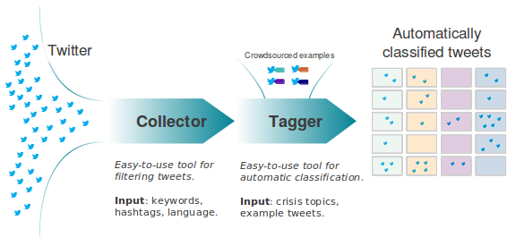

AIDR: What is AIDR?
AIDR is a free, open-source and easy to use platform that automatically filters and classifies relevant tweets that are posted during humanitarian crises. AIDR stands for Artificial Intelligence for Disaster Response.
During times of crises and mass emergencies, people turn to social media to gather and disperse timely, relevant information. AIDR combines human intelligence and machine intelligence to process this data in a way that neither can do alone. Social media data during crises is too large to be processed by people, and too complex to be process by machines.
How does it work?
The first step is to collect tweets related to a new or ongoing disaster. The Collector helps you do this by filtering tweets using keywords and/or hashtags such as "hurricane" and "#Sandy," for example. This is just like a regular Search on Twitter.com, which means most of the resulting tweets will not be relevant to disaster response or to the specific information needs of humanitarian organizations. This is where the Trainer comes in.
 While the Collector is a word-filter, the Trainer is a topic-filter. With the Trainer, users classify collected tweets by topics of interest, such as "Infrastructure Damage," and "Urgent needs," for example. The classifying is done using a simple microtasking interface, which means that more than one person (if desired) can contribute to classifying tweets that relate to infrastructure damage. In other words, a user can decide to classify the tweets themselves and/or choose to crowdsource the classification of said tweets. Built-in quality control features insure that the crowdsourced classification is accurate. The more tweets are tagged, the more accurate the automatic classifier will be. Ideally, at least 500 tweets should be labeled, but you can already see results with as little as 50.
Once this is done, the Tagger automatically applies the classifier to incoming tweets collected in real-time using the Collector. All new tweets that relate to infrastructure damage (or other category) are automatically tagged and displayed on the Tagger, which can power a live dashboard and/or crisis map. There, end-users such as humanitarian organizations can correct any mis-tagged tweets which then automatically corrects the automated classifier, thus making it more accurate over time.
Want to see AIDR in action? Take a look at our video walk-through illustrating the main functionalities.
Related Papers:
-
Muhammad Imran, Carlos Castillo, Ji Lucas, Patrick Meier, and Sarah Vieweg: AIDR: Artificial Intelligence for Disaster Response. To appear in WWW'14. Seoul, Korea.
-
Muhammad Imran, Carlos Castillo, Ji Lucas, Patrick Meier, and Jakob Rogstadius: Coordinating Human and Machine Intelligence to Classify Microblog Communications in Crises. To appear in ISCRAM'14. Pennsylvania, USA.
-
Muhammad Imran, and Carlos Castillo: Volunteer-powered Automatic Classification of Social Media Messages for Public Health in AIDR. To appear in Public Health in the Digital Age workshop in WWW 2014. Seoul, Korea.
-
Muhammad Imran, Ioanna Lykourentzou, Carlos Castillo: Engineering Crowdsourced Stream Processing Systems. arXiv pre-print, 2013.
-
Muhammad Imran, Shady Elbassuoni, Carlos Castillo, Fernando Diaz and Patrick Meier: Practical Extraction of Disaster-Relevant Information from Social Media. In SWDM. Rio de Janeiro, Brazil, 2013.
-
Muhammad Imran, Shady Elbassuoni, Carlos Castillo, Fernando Diaz and Patrick Meier: Extracting Information Nuggets from Disaster-Related Messages in Social Media. In ISCRAM. Baden-Baden, Germany, 2013. Best paper award [slides].